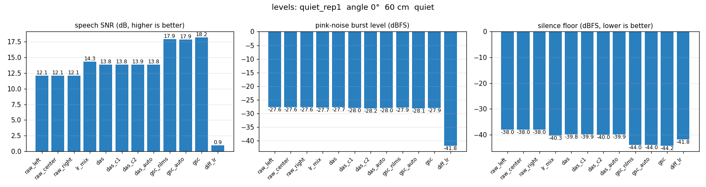
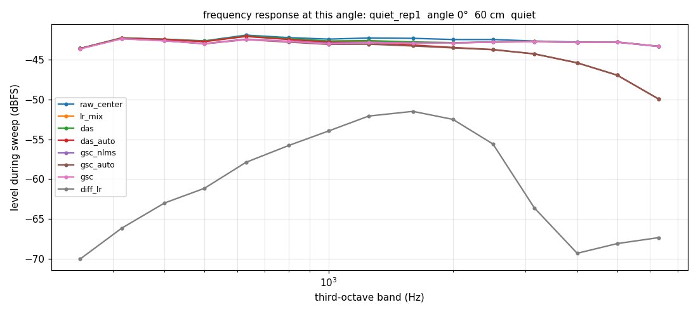
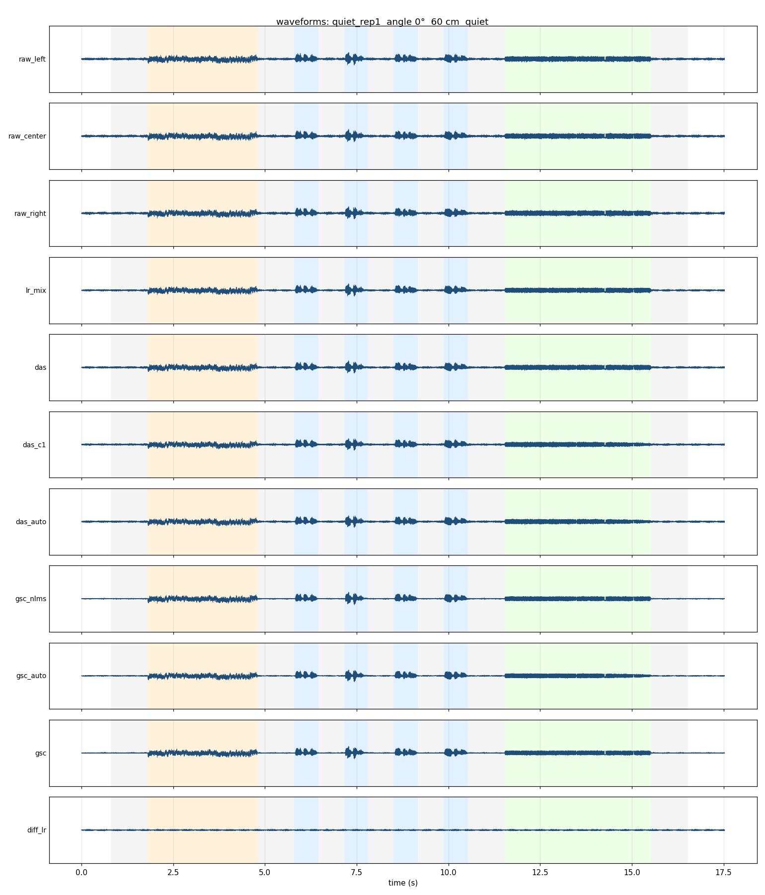
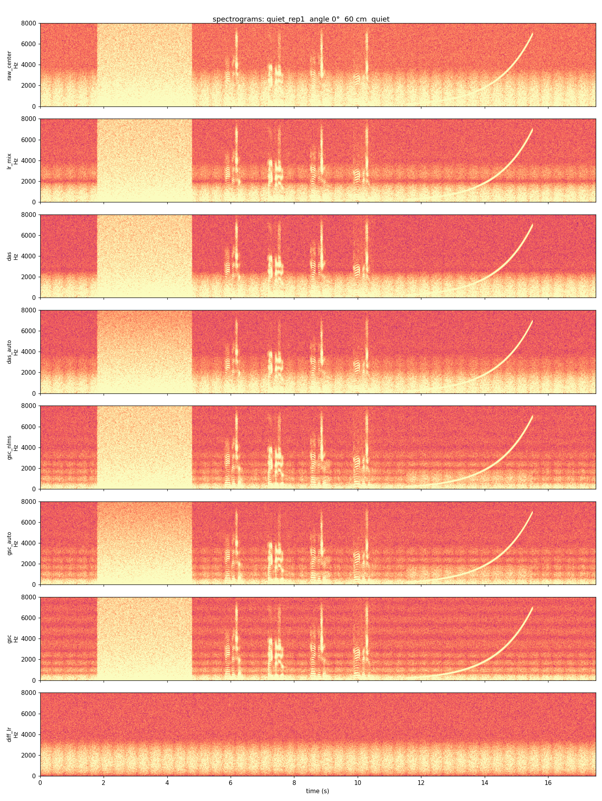

angle 0°, 60 cm, quiet, 17.53 s. Clip offset 0.8 s (confidence 0.928).
Microphones hear the source at +0° (L-R delay 0.0 samples, peak 9.4).
| path | rms_dbfs | speech_snr_db | noise_level_dbfs | silence_floor_dbfs | interf_rejection_db | interf_rejection_lf_db | snr_under_interference_db | speech_preservation | peak | clips |
|---|---|---|---|---|---|---|---|---|---|---|
| raw_left | -29.84 | 12.09 | -27.57 | -37.96 | 0.9793 | 6545 | 0 | |||
| raw_center | -29.84 | 12.09 | -27.56 | -37.96 | 0.9941 | 6926 | 0 | |||
| raw_right | -29.85 | 12.09 | -27.56 | -37.96 | 0.9793 | 6719 | 0 | |||
| lr_mix | -30.14 | 14.32 | -27.73 | -40.32 | 0.9985 | 6632 | 0 | |||
| das | -30.09 | 13.83 | -27.71 | -39.83 | 6728 | 0 | ||||
| das_c1 | -30.5 | 13.82 | -28.0 | -39.88 | 0.9939 | 6021 | 0 | |||
| das_c2 | -30.85 | 13.87 | -28.16 | -40.05 | 0.9835 | 5765 | 0 | |||
| das_auto | -30.5 | 13.82 | -28.0 | -39.88 | 0.9939 | 6021 | 0 | |||
| gsc_auto | -30.79 | 17.86 | -28.15 | -43.96 | 0.9741 | 6023 | 0 | |||
| diff_lr | -41.75 | 0.94 | -41.77 | -41.76 | 0.0041 | 1429 | 0 | |||
| gsc | -30.4 | 18.19 | -27.89 | -44.24 | 0.9803 | 6563 | 0 | |||
| gsc_nlms | -30.37 | 17.9 | -27.86 | -43.96 | 0.9792 | 6598 | 0 |



